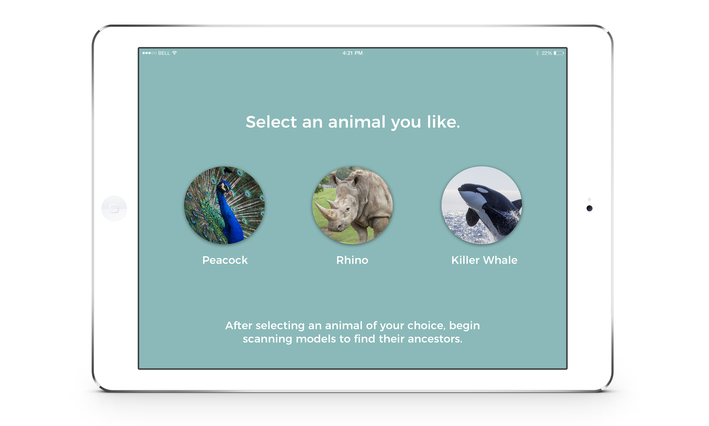

Project Concept: Ancestor Seeking is an AR game prototype. The goal of our prototype is to increase engagement and learning outcomes in the museum space. We were inspired and influenced to create a learning experience that felt immersive and entertaining to visitors. This encouraged us to gamify how users can learn about topics like the evolution process and how species relate to one another.
Roles: Concept Brainstorming, UI/UX & Graphic Design
Collaborators: Yao Chang, Yui Tian, and Franky Wang.
Ancestor Seeking AR Game



Ancestor seeking is an augmented reality (AR) game app that themes around the evolution
process and how current species have descended from their ancestors. With the app,
users are able to learn what characteristics and features specifically connect
species from different time periods.
Upon downloading, the user will land on a selection screen where they can select an animal of their choice for further exploration.
Upon downloading, the user will land on a selection screen where they can select an animal of their choice for further exploration.
Scanning
After the user has selected an animal, the interface will switch to camera mode
in order to allow users to begin scanning. The user can begin pointing towards
the physical models on display at the museum with either a mobile or tablet device.
While the user is in this mode, a hint button will appear on the screen in the left corner. The user can activate the hint to receive clues and facts about the ancestors.
While the user is in this mode, a hint button will appear on the screen in the left corner. The user can activate the hint to receive clues and facts about the ancestors.
AR Activation
When the device comes in contact with an installation, the camera will
switch to AR mode and display the inner skeleton of the species. Based
on the user's judgment, the user can determine if both animals are
related to one another.
User Testing
Our first round of testing was done with our graduate class. Based on feedback, we made
iterations to our prototype for the next round of testing. We had the opportunity
to take a trip to the Smithsonian National Museum of Natural History to
conduct user testing. We were able to interact with visitors and present
our idea. The images on the right were our setup. We used photographs of
the models to trigger the AR experience.
User Data & Analysis
At the beginning of each of our testing sessions, we asked each user if they had
previously downloaded an app at a museum before. Majority of the users we
spoke to had not. This was a critical question that we made sure to ask
considering our product would exist as an application.
Since we created a game product, it was essential to identify the level of difficulty of the game among users across different age ranges. All users that we tested with, successfully completed the game. We were also able to identify areas of uncertainty. It was a great opportunity to learn which areas required further improvement.
Since we created a game product, it was essential to identify the level of difficulty of the game among users across different age ranges. All users that we tested with, successfully completed the game. We were also able to identify areas of uncertainty. It was a great opportunity to learn which areas required further improvement.